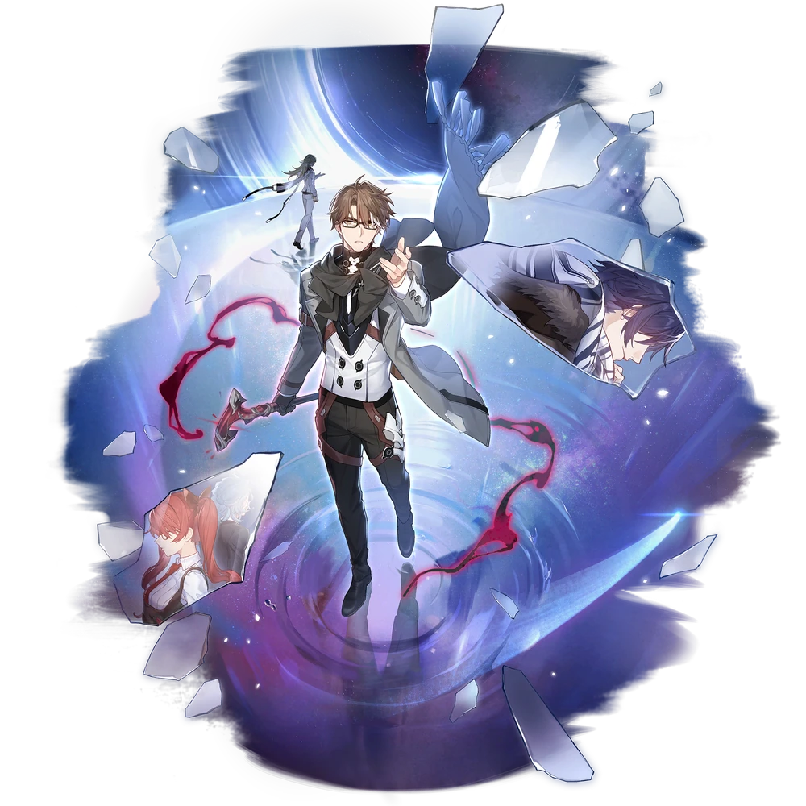
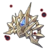

| Nome | Joachim Nokianvirtanen/Welt Yang |
|---|---|
| Elemento | Imaginario | Raridade | ✦ ✦ ✦ ✦ ✦ |
| Caminho | A Inexistência |
| Sexo | Homem |
| Especie | Humano |
| Facção | Astral Express, O sem-nome e Anti-Entropia | Mundo | Expresso Astral | Como obter | Personagem Evento Warp, Partida Warp e Stellar Warp | Data de Lançamento | 2023-04-26 | Adicionado pela primeira vez | Versão 0.60 |
Ascensões e estatísticas
| Fase de Ascensão | Level | Base HP | Base ATK | Base DEF | Base SPD |
|---|---|---|---|---|---|
| 0✦ | 1/20 | 153 | 84 | 69 | 102 |
| 20/20 | 298 | 164 | 135 | 102 | |
| 1✦ | 20/30 | 359 | 198 | 162 | 102 |
| 30/30 | 436 | 240 | 197 | 102 | |
| 2✦ | 30/40 | 497 | 274 | 225 | 102 |
| 40/40 | 574 | 316 | 259 | 102 | |
| 3✦ | 40/50 | 635 | 350 | 287 | 102 |
| 50/50 | 287 | 392 | 322 | 102 | |
| 4✦ | 50/60 | 773 | 426 | 349 | 102 |
| 60/60 | 849 | 468 | 384 | 102 | |
| 5✦ | 60/70 | 911 | 502 | 412 | 102 |
| 70/70 | 987 | 544 | 446 | 102 | |
| 6✦ | 70/80 | 1.048 | 578 | 474 | 102 |
| 80/80 | 1.125 | 620 | 509 | 102 |
| Nível | Custo de Evolução | Materiais de Ascensão do Personagem | Materiais Necessários |
|---|---|---|---|
| 0 → 1 ✦ |  4,000 4,000 |
||
| 1 → 2 ✦ | 8,000 |
||
| 2 → 3 ✦ | 16,000 |
3 |  6 6 |
| 3 → 4 ✦ | 40,000 |
7 | 9 |
| 4 → 5 ✦ | 80,000 |
20 |  6 6 |
| 5 → 6 ✦ | 160,000 |
35 | 9 |
Habilidades de combate
| Icone | Tipo | Nome | Descrição | Marcação | Energia | Resistência DMG |
|---|---|---|---|---|---|---|
| ATK básico | Supressão de gravidade | Causa DANO imaginário igual a 50%–130% do ATK de Welt a um único inimigo. | Alvo único | Geração: 20 | 30 | |
| Skill | Borda do Vazio | Causa DMG imaginário igual a 36%–90% do ATK de Welt a um único inimigo e ainda causa DMG 2 vezes extras, com cada vez causando DMG imaginário igual a 36%–90% do ATK de Welt a um inimigo aleatório. Ao acertar, há uma chance básica de 65%–80% de reduzir o SPD do inimigo em 10% por 2 turno(s). | Quicar | Geração: 10 × 3 | 30 (por acerto) | |
| Ultimate | Buraco Negro Sintético | Causa dano imaginário igual a 90%–180% do ATK de Welt a todos os inimigos, com uma chance base de 100% para os inimigos atingidos por esta habilidade serem aprisionados por 1 turno. Inimigos aprisionados têm suas ações atrasadas em 32%–44% e SPD reduzido em 10%. | AoE | Custo: 120 Geração: 5 | 60 | |
| Talento | Distorção de tempo | Ao atingir um inimigo que já está desacelerado, Welt causa DMG imaginário adicional igual a 30% a 75% de seu ATK ao inimigo | Melhorar | |||
 |
Técnica | Aprisionamento Gravitacional | Depois de usar a técnica de Welt, crie uma dimensão que dura 15 segundo(s). Inimigos nesta dimensão têm seu movimento SPD reduzido em 50%. Depois de entrar em batalha com inimigos na dimensão, há 100% de chance base de aprisionar os inimigos por 1 turno. Inimigos aprisionados têm suas ações atrasadas em 20% e SPD reduzido em 10%. Apenas 1 dimensão criada por aliados pode existir ao mesmo tempo. | Prejudicar |
Eidolons
| Icone | Nome da habilidade | Nivel | Descrição |
|---|---|---|---|
| Legado de Honra | 1 | Depois que Welt usa seu Ultimate, suas habilidades são aprimoradas. Na(s) próxima(s) 2 vez(es) que ele usar seu ATK Básico ou Habilidade, causa DANO Adicional ao alvo igual a 50% do multiplicador de DMG de seu ATK Básico ou 80% do multiplicador de DMG de sua Habilidade, respectivamente. | |
| Confluxo de Estrelas | 2 | Quando seu talento é acionado, Welt regenera 3 de energia. | |
| Oração da Paz | 3 | Habilidade Nv. +2, até um máximo de Lv. 15. ATK Básico Lv. +1, até um máximo de Lv. 10. | |
| Denominação de Justiça | 4 | A chance base da habilidade infligir redução de SPD aumenta em 35%. | |
| Poder da Bondade | 5 | Nível final +2, até um máximo de Lv. 15. Talento Nv. +2, até um máximo de Lv. 15. | |
| Perspectiva da Glória | 6 | Ao usar Skill, causa DMG por 1 vez extra a um inimigo aleatório. |
Traços
| Custo Total (1 → 6 para rastreamento de ATK básico) | ||||||
|---|---|---|---|---|---|---|
| 240.000 |
7 |
7 |
 3 3 |
 8 8 |
 11 11 |
| Custo total (1 → 10 para um rastreamento) | ||||||||
|---|---|---|---|---|---|---|---|---|
| 652.000 |
13 |
7 |
3 |
15 |
30 |
.webp) 3 3 |
 1 1 |